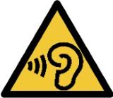

Safety
Observe Space standard safety requirements and procedures defined by the Global Environmental
Health , andamp; Safety (EH, andamp;S) organization, as well as all applicable local, regional, and
national requirements. Safety equipment and instructions specific to the completion of this
work instruction are detailed in the Instructions Section.
 |
 |